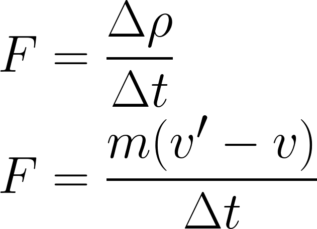
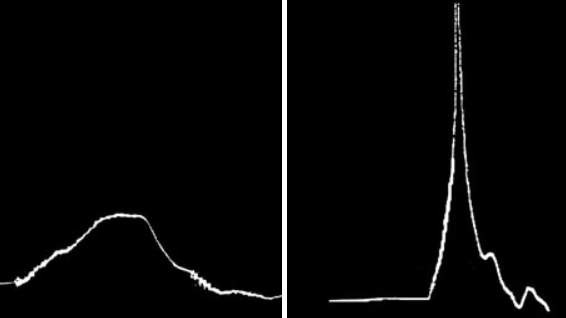

Bike helmets seem intuitively simple: add a hard protective layer to the head, which is a much more sensitive object. But, there is a little more complexity to it, and here we explore the physics behind it. The basic principle is that the total forces involved in a crash cannot be changed, so they must be dealt with to minimize the sudden acceleration to the brain (relative to the skull) and mechanical damage to the skin and sensory organs.
Most biking helmets are primarily made of a hard shell and a thicker layer of foam. This hard exterior distributes the large forces of a crash across the helmet, allowing less parts of the head to experience an extreme force that could otherwise be concentrated into a small area.
The foam also works to distribute some of the force across the helmet, but its primary purpose can be understood with Newton's second law of motion: the net force acting on a body is equal to the rate of change of a body's momentum.
When a collision occurs, the mass and speed of the relevant objects right before the collision of course can not be changed. Therefore, the only option is to increase the amount of time spent applying a force to the person and helmet. The force is inversely proportional to the time between the initial and final momentum, so increasing time decreases the maximum force applied to the wearer during the crash. Below is a comparison of impact energy experienced by the brain vs. time measured in a lab test, where the left graph is with a helmet with the force being spread out over about 6ms. This is about how much more time the foam in a bike helmet gives you when it is crushed in a collision. The right graph was produced without a helmet, with a dangerous spike when the crash first occurs.
Thicker foam is safer because it can increase the stopping time more, but it comes with price, weight, aerodynamic, and aesthetic drawbacks. The density of the foam used is also a faCtor, with denser foam being ideal for harder impacts, while less dense foam can crush more and thus reducing the force more for less severe impacts.